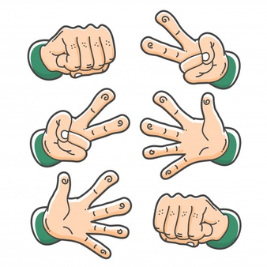

This application is run in the terminal and allows two users to play the classic game of rock paper scissors.
This was one of the first class excersises I completed using the Ruby programming language.
RETURN TO PORTFOLIO